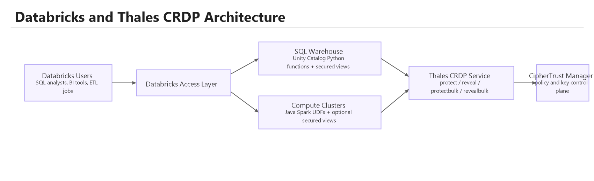
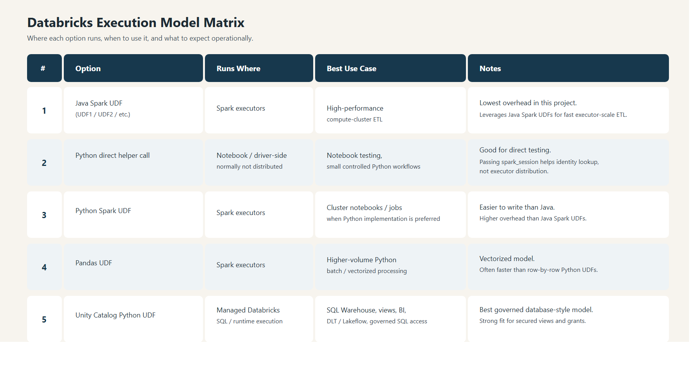

Thales CRDP and CipherTrust Manager extend Databricks with governed protection and reveal capabilities across SQL Warehouse, compute clusters, Structured Streaming, Lakeflow, Delta Live Tables, and reusable Python packaging. The result is a flexible platform pattern that helps organizations protect sensitive data without breaking the way data teams already work.
Databricks teams want to keep moving quickly without forcing every notebook, SQL model, BI dashboard, streaming job, and production pipeline to implement custom protection logic. Thales brings a governed control layer that lets organizations protect, tokenize, reveal, and control access through repeatable patterns instead of one-off code.
This allows security and data teams to work together: Thales keeps control of keys and policy, while Databricks users continue to work in familiar SQL, Spark, Python, and pipeline environments.
Unity Catalog SQL and Python functions plus secure views for analysts, reporting teams, and BI workloads.
Java UDFs and Python helpers for notebook-driven engineering, ETL, and high-throughput parallel workloads.
Structured Streaming, Lakeflow, and Delta Live Tables support using the same governed protection and reveal patterns.
Expose protected and revealed fields through Unity Catalog SQL or Python functions and secure views that fit naturally into Databricks SQL and BI consumption patterns.
Use Java UDFs on compute clusters for parallel protect and reveal operations where Spark executor throughput and ETL control matter most.
Reuse governed function patterns in Structured Streaming pipelines so streaming workloads can follow the same protection model as batch and interactive SQL.
Fit protection and reveal into managed pipeline patterns, including Lakeflow and Delta Live Tables style implementations where governed SQL or Python functions are preferred.
Deploy Python logic through a reusable wheel so SQL Warehouse and related Python-based patterns do not depend on copy-pasted notebook code.
Databricks workloads call a governed function layer. That function layer invokes Thales CRDP for protect and reveal operations, while CipherTrust Manager remains the policy and key control plane.

Analysts, BI tools, notebooks, pipelines, and engineering jobs all enter through a governed Databricks access layer rather than embedding custom security logic in every workload.
Unity Catalog SQL/Python functions support SQL Warehouse and governed query use cases, while Java Spark UDFs support compute-cluster ETL and notebook-oriented Spark execution.
CRDP performs runtime protect and reveal operations, while CipherTrust Manager remains the authority for keys, policies, user sets, and reveal rules.
The solution is not limited to a single execution pattern. It includes several optimization levers so organizations can tune for throughput, efficiency, and operational simplicity based on workload type.

Begin with the access path that matters most, such as governed SQL for BI and analysts, or Spark-based ETL for engineering-heavy workflows.
Reuse the same protection approach across SQL Warehouse, compute clusters, Structured Streaming, Lakeflow, and DLT rather than inventing separate security code paths.
Move from simple proof-of-concept deployments toward AKS-backed CRDP services, warm replicas, and autoscaling as production demands increase.
Different teams and systems can adopt protection at different times while still working within one governed Databricks and Thales integration model.